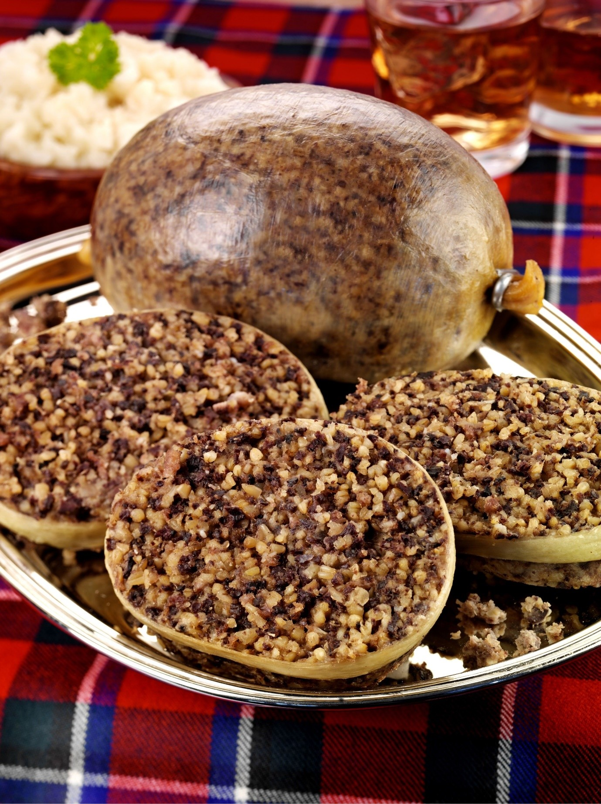

Ross's Haggis
Haggis is very important culturally in Britain, esp. Scotland, as well as tasting delicious! It’s traditionally eaten on Burns night, a celebration of the Scottish poet Rabbie Burns, when the “ode to a haggis” is recited before the meal. Haggis can also be enjoyed breaded or deep fried in a fish and chip like manner.
Ingredients:
1 sheep's stomach or ox secum, cleaned and thoroughly, scalded, turned inside out and soaked overnight in cold salted water - heart and lungs of one lamb - 450g/1lb beef or lamb trimmings, fat and lean - 2 onions, finely chopped - 225g/8oz oatmeal - 1 tbsp salt - 1 tsp ground black pepper - 1 tsp ground dried coriander - 1 tsp mace - 1 tsp nutmeg - water, enough to cook the haggis - stock from lungs and trimmings
Mode of preparation

Wash the lungs, heart and liver (if using). Place in large pan of cold water with the meat trimmings and bring to the boil. Cook for about 2 hours. When cooked, strain off the stock and set the stock aside. Mince the lungs, heart and trimmings. Put the minced mixture in a bowl and add the finely chopped onions, oatmeal and seasoning. Mix well and add enough stock to moisten the mixture. It should have a soft crumbly consistency. Spoon the mixture into the sheep's stomach, so it's just over half full. Sew up the stomach with strong thread and prick a couple of times so it doesn't explode while cooking. Put the haggis in a pan of boiling water (enough to cover it) and cook for 3 hours without a lid. Keep adding more water to keep it covered. To serve, cut open the haggis and spoon out the filling. Serve with neeps (mashed swede or turnip) and tatties (mashed potatoes).